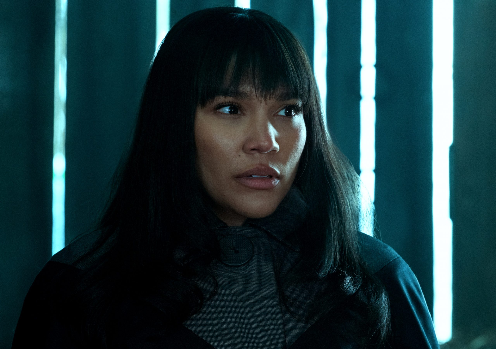

-Aidan Gallagher est un acteur américain né le 18 septembre 2003 à Los Angeles. Son premier rôle principal a été de représenter l'un des frères quadruplés, Nicky Harper, dans la série télévisée Nickelodeon Nicky, Ricky, Dicky et Dawn. Il est surtout connu pour son rôle de « Numéro 5 / Le garçon » dans la série télévisée américaine Umbrella Academy .
-Aidan Gallagher commence sa carrière à 9 ans, lorsqu'il apparaît dans un épisode du sitcom Modern family, diffusé sur la chaîne américaine ABC. Entre 2014 et 2018, il joue le rôle de Nicky Harper dans la série Nicky Ricky Dicky et Dawn diffusée sur Nickelodeon. Il a écrit 5 chansons; For You, Time, I love you, Blue Neon et Miss You, qui fut créé avec sa meilleure amie Trinity Rose1 ainsi que 4th of July Récemment sortie. En 2019, il joue le rôle de « Numéro 5 / Le garçon » l'un des personnages principaux dans la série télévisée américaine Umbrella Academy. La série est diffusée sur Netflix le 15 février 20192.
N°01:
Spaceboy (Luther Hargreeves) : c'est le chef de l'Umbrella Academy. Il est doté d'une force et d'une résistance hors du commun. Après une expédition désastreuse sur Mars, le Monocle a effectué une opération expérimentale au cours de laquelle la tête de Spaceboy fut attachée au corps d'un gorille martien. Son corps de gorille martien peut résister au vide et au froid de l'espace, tant qu'il porte un casque. Il utilise souvent un jetpack et son arme de prédilection est un pistolet à rayons. Après sa carrière à la Umbrella Academy, il s’installe sur la Lune et habite à l’avant-poste de Annihilation Control. Sur la lune, Luther est assisté par un majordome robotique du nom de Ben. Tel que révélé dans Dallas, Spaceboy et The Boy (numéro cinq) sont des frères jumeaux.

N°02:
Kraken (Diego Hargreeves) : il est capable de retenir sa respiration indéfiniment et présente de bonnes aptitudes au combat rapproché et pour le maniement du couteau. Il est très insolent, ne respecte pas les règles et a un penchant pour la bagarre. Luther et lui ont une rivalité très nette et Diego ne semble pas disposé à accepter les ordres de Luther. Il ressemble plus à un super-héros tel que Batman dans la mesure où il effectue des patrouilles régulières. Durant l'adolescence, il était bassiste dans un groupe appelé Prime-8s, avec Body (l'assistant de l'inspecteur Lupo) et Vanya Hargreeves. On apprend qu'il est gaucher dans la nouvelle Anywhere but Here, alors qu'il joue de la basse pour gaucher. Il semble qu'il entretienne un amour secret pour sa sœur adoptive, Vanya1.
N°03:
Rumeur (Allison Hargreeves) : elle a la capacité de faire se réaliser des événements rien qu'en les énonçant et à la simple condition qu'elle commence sa phrase par J'ai entendu une rumeur .... . Après sa carrière à la Umbrella Academy, elle a épousé son petit ami Patrick et a eu une fille nommée Claire. Le couple a depuis divorcé et Patrick a la garde complète de leur fille. Elle est romantiquement lié à son frère adoptif, Spaceboy, mais leur amour l'un pour l'autre n'est pas consommé, car Spaceboy se voit lui-même comme une monstruosité à cause de son corps de gorille martien. Elle est décrite comme narcissique, ce qu'elle avoue d'ailleurs clairement dans le volume deux Dallas. Sa main gauche est cybernétique, le Dr Terminal ayant dévoré sa main d'origine lorsqu'elle était enfant. Rumeur a eu les cordes vocales sectionnés par Vanya, ce qui rendit son pouvoir inutilisable et la rendit muette, cependant dans le deuxième tome, les agents du Tempus Aeternalis feront réparer ses cordes vocales. Elle est la responsable du meurtre du président Kennedy.
N°04:
Séance (Klaus Hargreeves) : il est télékinésiste, peut léviter et communiquer avec les morts. Toutefois, ses pouvoirs ne fonctionnent que s'il est pieds nus et sobre. Il a le teint très pâle et dans ses mains sont tatoués les mots "Hello" et "Goodbye". Plus jeune il a consommé beaucoup de drogues en tout genre, ce qui lui a valu plusieurs séjours en désintoxication. Dans "Dallas", on voit Klaus tenir un bébé vietnamien qui se révèle être le sien.
N°05:
N°05 il a le pouvoir de voyager dans le temps. À l'âge de 13 ans, il fait une fugue et explore l'avenir. Sir Reginald Hargreeves a averti qu'il « pourrait ne jamais revenir en arrière » ; il lui a fallu 45 ans pour découvrir comment remonter dans le temps. Il a vieilli physiquement normalement au cours de cette période, mais il a conservé son apparence de 13 ans à son retour dans le passé, bien que ses frères et sœurs adoptif aient 29 ans. Son corps est apparemment coincé dans le temps et ne peut pas vieillir, car les examens médicaux prouvent qu'il n'y a aucun signe de croissance cellulaire, ni de mort. Dans le tome 2, Dallas, on apprend que N°5 fut employé par une agence d'assassins chargés d'éliminer toute anomalie dans le continuum espace-temps et que Spaceboy et N°5 sont jumeaux. Il a un chiot nommé M. Pennycrumb.
N°06:
Horreur (Ben Hargreeves) : il a l'apparence d'un enfant mais possède des tentacules semblables à ceux d'une pieuvre sur son ventre. Il est décédé, mais aucune information sur sa mort n'est donnée. Une statue commémorative de lui est située devant l'Académie. Il n'apparait que très peu dans l'histoire. Même s'il est mort depuis le début de la série, il a été décrit comme un membre de l'Académie des parapluies.
N°07:
la Viole Blanche (Vanya Hargreeves) : le membre le plus isolé du groupe. Vanya ne présente à l’origine aucun pouvoir particulier, à part un intérêt pour la musique. On sait que Vanya a écrit un livre détaillant sa vie à l'Académie et sa décision de partir. Selon le chef d'orchestre, chef de l'orchestre Verdammten, elle est la plus puissante de The Umbrella Academy. Lorsqu'elle était encore très jeune, le Monocle a refoulé ses pouvoirs et l'a maintenue sous médications afin de les utiliser, mais ils sont finalement libérés par le chef d'orchestre, ce qui a comme résultat de la rendre folle. Elle est capable de libérer des vagues de force destructrices en utilisant son violon qui peuvent être assez puissantes pour trancher la gorge de quelqu'un ou détruire un bâtiment entier avec une seule note.
Ma deuxième page